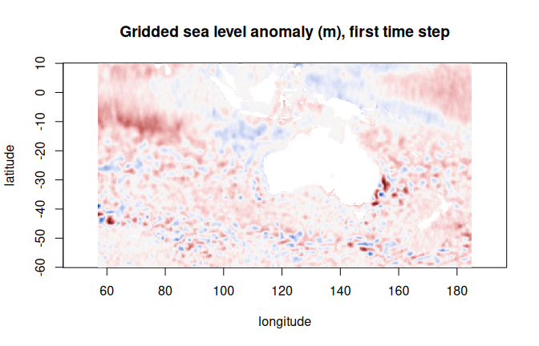
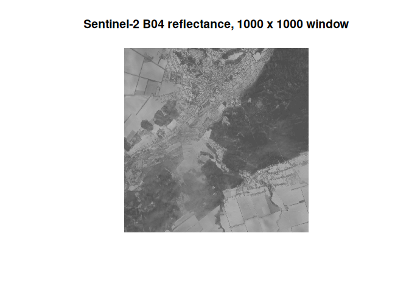

zaro reads Zarr arrays into R: native Zarr V2 and V3 (sharded too), and virtual Zarr, where the chunks are byte ranges inside NetCDF, HDF5 and GeoTIFF files that stay where they are. Local disk, HTTP(S), S3 and GCS.
Every read is the same three steps, and you can run each one yourself:
The plan is a plain data frame with one row per chunk (path, offset, size), in the shape of a byterefs view. The fetch sends every row through one curl connection pool, merging touching byte ranges. Decoding is R. arrow and GDAL are optional.

One day of BRAN2023 surface temperature: 60 byte ranges in one NetCDF file on NCI’s THREDDS server, found by a VirtualiZarr reference store, fetched in one merged request.
Install
install.packages("zaro", repos = c("https://hypertidy.r-universe.dev",
"https://cloud.r-project.org"))Imports are light: curl, jsonlite, nanoparquet, S7 (and base R’s methods and utils). Optional: altarr (lazy arrays), arrow (S3 and GCS listing and credentials, lz4/brotli/snappy codecs), gdalraster (GDAL /vsi... paths, S3 and GCS without arrow), blosc, DBI and RSQLite (byterefs SQLite stores).
A first look
library(zaro)
options(zaro.verbose = FALSE) # zaro explains what it does by default
ds <- zaro_dataset("s3://aodn-cloud-optimised/model_sea_level_anomaly_gridded_realtime.zarr",
anonymous = TRUE, region = "ap-southeast-2")
ds
#> <zaro_dataset> 8 array(s) [zaro::ArrowStore]
#> GSL float64 (LONGITUDE: 641, LATITUDE: 351, TIME: 2519)
#> GSLA float64 (LONGITUDE: 641, LATITUDE: 351, TIME: 2519)
#> LATITUDE float32 (LATITUDE: 351)
#> LONGITUDE float32 (LONGITUDE: 641)
#> TIME float64 (TIME: 2519)
#> UCUR float64 (LONGITUDE: 641, LATITUDE: 351, TIME: 2519)
#> VCUR float64 (LONGITUDE: 641, LATITUDE: 351, TIME: 2519)
#> filename string (TIME: 2519)
#> attributes: 37One request (the consolidated metadata), no array data. Then read a slice (0-based start, count in Zarr order, NA for the rest of an axis):
gsla <- zaro_read(ds, "GSLA", start = c(0, 0, 0), count = c(1, NA, NA))
dim(gsla)
#> TIME LATITUDE LONGITUDE
#> 1 351 641
Or open it as a lazy R array that reads only the chunks you index (an altarr ALTREP array, dimensions in R order), with CF masking and unpacking:
x <- zaro_array(ds, "GSLA", cf = TRUE)
dim(x)
#> [1] 641 351 2519
## both coordinates in one fetch, then a 200-day series at 155E, 35S
xy <- zaro_read_arrays(ds, c("LONGITUDE", "LATITUDE"))
i <- which.min(abs(xy$LONGITUDE - 155)); j <- which.min(abs(xy$LATITUDE + 35))
ts <- x[cbind(i, j, 1:200)]
summary(ts)
#> Min. 1st Qu. Median Mean 3rd Qu. Max.
#> -0.4010 0.1382 0.4242 0.3446 0.5358 0.8861Virtual stores: the bytes stay in place
A virtual store holds references, not data. Once open it behaves like any other store.
| Source | Address |
|---|---|
| kerchunk JSON | reference+json:///path/refs.json |
| kerchunk Parquet | reference+parquet:///path/refs.parquet |
| VirtualiZarr Parquet manifests | virtualizarr://https://.../dataset.parq |
| byterefs SQLite table | byterefs:///path/store.sqlite |
| byterefs flat Parquet export | flatrefs://https://.../store |
byterefs stores apply their default path remap (target), so a table scanned on a local mirror reads from the public copy. A flat refs store is read by Parquet row group, only those whose statistics can hold the selection: a one-day plan from BRAN2023’s 37.5M-row temp table reads one 9 MB row group.
This made-up 30-day track off Tasmania reads one value per day from 30 NetCDF files, all fetched concurrently (the full code is in the virtual stores article):
bran <- zaro_dataset("virtualizarr://https://raw.githubusercontent.com/mdsumner/virtualized/refs/heads/main/remote/ocean_temp_2023.parq")
temp <- zaro_array(bran, "temp", cf = TRUE) # int16 unpacked to degrees C
dim(temp)
#> [1] 3600 1500 51 5479
system.time(track$temp <- temp[idx]) # idx: lon, lat, depth, day per row
#> user system elapsed
#> 0.539 0.128 1.024
Plan, then fetch
bran <- zaro("virtualizarr://https://raw.githubusercontent.com/mdsumner/virtualized/refs/heads/main/remote/ocean_temp_2023.parq")
p <- zaro_plan(bran, "temp", start = c(0, 0, 0, 0), count = c(1, 1, NA, NA))
p
#> <zaro_plan> 'temp': 60 chunk(s), 60 request(s)
#> transport: http 60
#> bytes: 3.6 MB
#> hosts: thredds.nci.org.au
#> key transport offset size path
#> temp/0.0.0.0 http 46353 74186 ...N2023/daily/ocean_temp_2010_01.nc
#> temp/0.0.1.0 http 941632 69286 ...N2023/daily/ocean_temp_2010_01.nc
#> ... 58 more
raw <- zaro_fetch(bran, p)
attr(raw, "stats")$requests # the 60 ranges touch, so they merge
#> [1] 1Sharded Zarr V3 and nested groups
A shard is planned as one more level of byte references: one small ranged read for its index, then each inner chunk is a byte range of the shard. This EOPF Sentinel-2 L2A product keeps its bands several groups down:
eopf <- zaro("https://s3.explorer.eopf.copernicus.eu/esa-zarr-sentinel-explorer-fra/tests-output/sentinel-2-l2a/S2C_MSIL2A_20260120T084301_N0511_R064_T36UXA_20260120T122910.zarr")
zaro_groups(eopf) # every group, arrays in each
r10m <- zaro_dataset(eopf, group = "measurements/reflectance/r10m")
v <- zaro_read(r10m, "b04", start = c(5000, 5000), count = c(1000, 1000))
Checked against zarr-python 3.2.1 and GDAL on this store, and against GDAL’s sharding test fixtures.
What it covers
-
Zarr V2 and V3: consolidated metadata (
.zmetadata, consolidatedzarr.json) including nested groups;sharding_indexedwith its index at either end; numpy dtype strings,_ARRAY_DIMENSIONS, C and F order. -
Types: integers, floats (float16 too), bool, 64-bit integers as exact doubles; strings (
fixed_length_utf32,null_terminated_bytes,vlen-utf8) as character. -
Codecs: zstd, gzip, zlib and bz2 in base R; blosc; lz4, brotli and snappy via arrow; shuffle,
imagecodecs_delta(TIFF predictor 2);crc32cstripped. A codec zaro doesn’t know is refused clearly. -
Transport: local files in base R; HTTP(S) with curl; S3 and GCS as HTTPS through the same pool when access is known (anonymous, or S3 keys in the environment), otherwise through arrow or GDAL; any GDAL
/vsi...path through gdalraster. -
Lazy arrays:
zaro_array()via altarr, with CF decoding. -
ndr: zaro is the Zarr engine for ndr’s
open_dataset()(labelled dimensions, selection by value, reductions).
Functions
zaro() |
open a store (any of the sources above) |
zaro_dataset(), zaro_groups()
|
every array of a group and its dimensions; the groups of a store |
zaro_list(), zaro_meta()
|
list keys; read an array or group’s metadata |
zaro_read(), zaro_read_arrays()
|
a hyperslab as an R array; several whole arrays in one fetch |
zaro_array() |
a lazy R array, optionally CF-decoded |
zaro_plan(), zaro_fetch()
|
the byte references a read needs; fetching them |
zaro_chunk(), zaro_chunks(), zaro_chunk_info(), zaro_chunk_apply()
|
work chunk by chunk |
Options
| Option | Default | |
|---|---|---|
zaro.verbose |
TRUE |
diagnostic messages from every function |
zaro.max_con |
8 |
HTTP connections, per host and in total |
zaro.merge_gap |
0 |
merge byte ranges this close on the same file |
zaro.cloud_anonymous |
FALSE |
treat S3/GCS as anonymous (curl pool) |
zaro.flat_cache_row_groups |
4 |
flat refs row groups kept in memory |
Learn more
The articles walk through each piece with live data: getting started, connecting to stores (HTTPS, S3, GCS, custom endpoints, credentials, translating Python’s storage_options), virtual stores, planning, fetching and sharding, and zaro as an ndr engine.
Design notes live in inst/docs-design/: origin, parallelization, Icechunk, ecosystem position, cloud connection helpers, URI interpretation, the roadmap, and zaro’s position on byterefs.
Related packages
- ndr: xarray-like labelled arrays for R; uses zaro for Zarr and virtual Zarr, GDAL for the rest.
-
altarr: lazy chunked arrays as plain R arrays;
zaro_array()is built on it. - zarr (CRAN) and pizzarr: R Zarr implementations with their own store and codec models.
- gdalraster: GDAL bindings, including the Zarr driver and the multidimensional API; zaro uses its VSI layer when asked.
- raad.virtualize: produces byterefs stores that zaro reads.
zaro implements the Zarr specification directly rather than wrapping a Zarr library, so a store written by xarray or zarr-python reads without conversion, and the same references serve Python, GDAL and zaro.